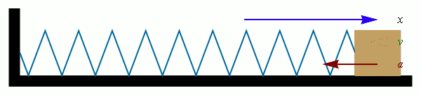

Getaran Selaras Pada Pegas
Salah satu penerapan getaran harmonik sederhana yaitu pada sebuah benda dengan massa \( m\) yang diikatkan pada pegas dengan konstanta \( k \) yang bebas bergerak tanpa hambatan atau gesekan. Ilustrasinya dapat dilihat pada animasi dibawah ini  Telah dijelaskan pada pembahasan sebelumnya bahwa gerak harmonik dipengaruhi oleh adanya gaya pembalik. Besar gaya pembalik pada gerak harmonik yaitu dirumuskan dengan \(F = - kx \). Jika disubstitusikan hukum II Newton tentang gerak \( (F = ma) \) maka persamaan gaya pada gerak harmonik diperoleh sebagai berikut:
\( -kx = ma \)
\( -kx = m \frac{d^2x}{dt^2} \)
\( \frac{d^2x}{dt^2} + \frac{k}{m}x = 0\)
\( \frac{d^2x}{dt^2} = - \frac{k}{m}x\)
Salah satu solusi dari persamaan diatas yaitu \( x = A \ cos \ (\omega t + \phi)\) Jika x diturunkan dua kali terhadap waktu maka diperoleh
\( \frac{d^2x}{dt^2} = - \omega^2 A \cos \ (\omega t + \phi) \)
Sehingga jika disubstitusikan pada persamaan gaya pada setaran selaras diperoleh\( - \omega^2 A \cos \ (\omega t + \phi) = - \frac{k}{m} A \ cos \ (\omega t + \phi)\)
Maka diperoleh persamaan untuk \( \omega \) (kecepatan sudut) yaitu:
\( \omega^2 = \frac{k}{m} \) atau \( \omega = \sqrt \frac{k}{m} \)
Jika \( x = A \ cos \ (\omega t + \phi)\) dijumlahkan dengan \( \frac{2 \pi}{\omega} \)maka persamaannya menjadi
\( x = A \ cos \ [\omega (t+ \frac{2 \pi} {\omega}) + \phi]\)
\( x = A \ cos \ (\omega t+ 2 \pi + \phi)\)
\( x = A \ cos \ (\omega t + \pi)\)
\( T = \frac{2 \pi}{\omega} = 2 \pi \sqrt \frac{m}{k} \)
Persamaan frekuensi untuk getaran pada pegas yaitu\( f = \frac {1}{T} = \frac {1}{2 \pi} \sqrt \frac {k}{m} \)
Getaran Selaras Pada Bandul
Bandul sederhana adalah benda ideal yang terdiri dari sebuah titik massa, yang digantungkan pada tali ringan yang tidak dapat mulur. Jika bandul diberikan simpangan ke arah samping dari posisi setimbangnya, maka bandul akan berayun dalam bidang vertikal karena pengaruh gaya gravitasi
Gambar tersebut menunjukkan sebuah bandul yang panjangnya l dengan massa beban yaitu m, membentuk sudut \( \theta \) terhadap sumbu Y. Gaya \( F \) yang bekerja pada beban adalah \( mg \) dengan T adalah tegangan tali. gaya pemulih pada bandul yaitu \( F = -mg \ sin \ \theta \). Perhatikan bahwa gaya pemulih ini tidaklah sebanding dengan simpangan sudut \( \theta \), melainkan dengan \( sin \ \theta \). Tetapi jika sudut \(\theta\) kecil, maka \( sin \theta \) hampir sama dengan \(\theta\). Maka diperoleh
\( F = -mg \theta = - mg \frac{x}{l} = -( \frac{mg}{l} ) x \)
Konstanta \( (\frac{mg}{l}) \) adalah konstanta \(k\) dalam \( F=-kx \). Sehingga periode bandul jika amplitudonya kecil adalah
\( T = 2 \pi \sqrt \frac{m}{k} = 2 \pi \sqrt \frac {m}{\frac {mg}{l}} \)
atau\( T = 2 \pi \sqrt \frac{l}{g} \)
\( f = \frac {1}{T} = \frac {1}{2 \pi} \sqrt \frac {g}{l} \)